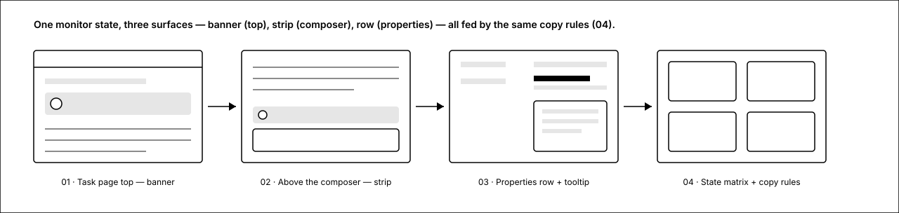
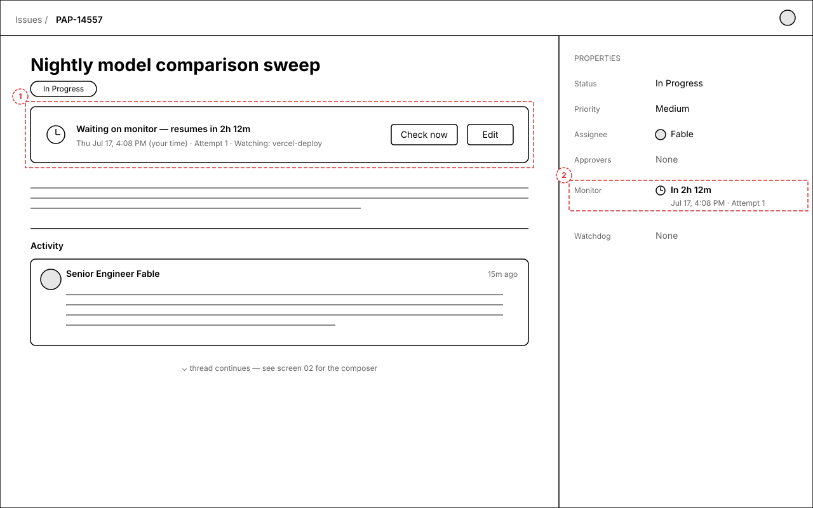
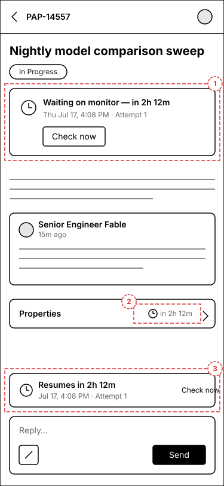
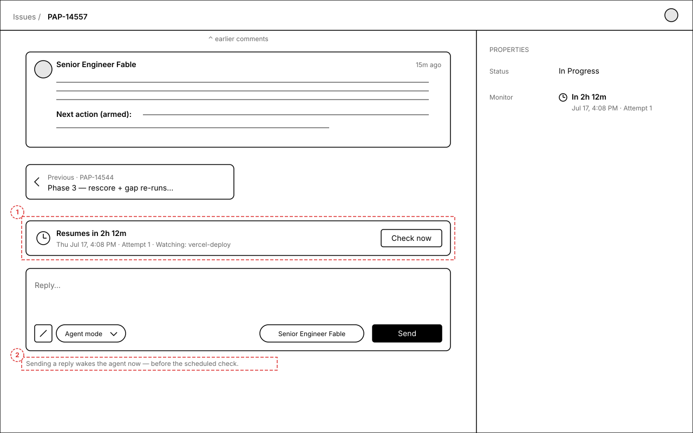
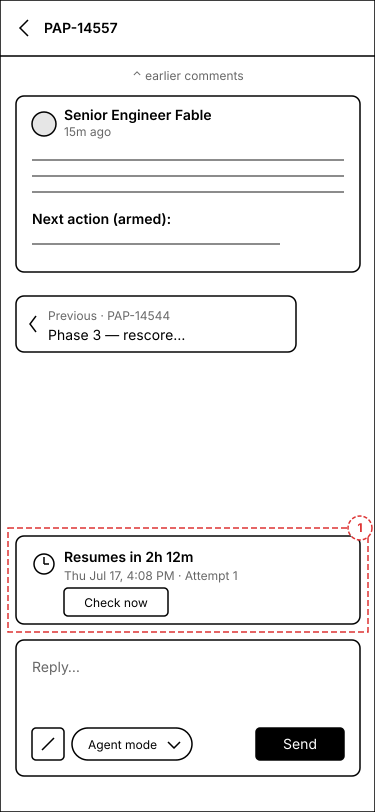
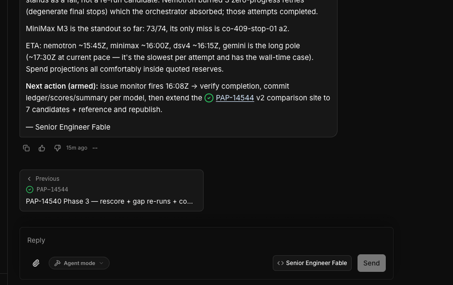
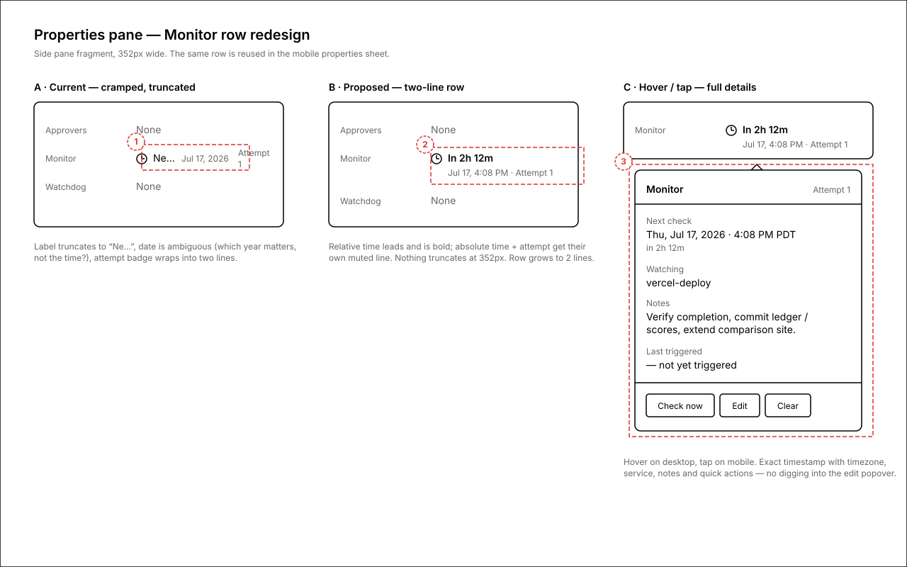
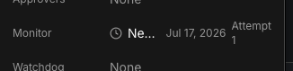
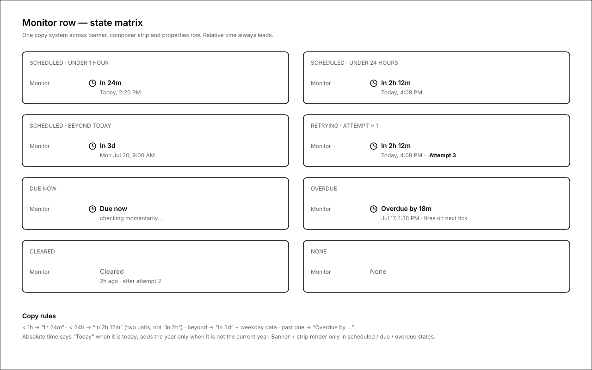

Make a waiting monitor obvious
When an issue has a monitor armed, nothing on the page says so unless you squint at a truncated properties row. These wireframes surface the same monitor state in three places — a banner at the top of the task page, a strip directly above the reply composer, and a readable two-line properties row with a hover tooltip for full details. Every surface shows both the exact time and how far away it is from now.
One monitor state, three surfaces
The banner, the composer strip, and the properties row are all fed by the same state + copy rules (screen 04), so they can never disagree. Red dashed marks are annotation callouts, not UI.

1.Monitor banner under the title
A full-width banner sits between the issue title and the description whenever a monitor is scheduled, due, or overdue. Headline leads with the relative time ("resumes in 2h 12m"); the second line gives the exact local time, the attempt count, and what is being watched. "Check now" fires the monitor immediately; "Edit" opens the existing monitor editor.


Annotations
- 1 — Monitor banner: bold relative time first, exact time + attempt + watched service second, actions on the right. On mobile the actions drop below the text.
- 2 — Properties Monitor row switches to the two-line layout (detail on screen 3). On mobile (callouts 2–3 on the phone frame) the collapsed properties bar carries a compact "in 2h 12m" chip and the strip repeats above the composer.
2.Strip above the reply composer
The bottom of the thread is where you go to ask "what's happening?" — so the answer sits right there. A compact strip directly above the composer repeats the resume time (exact + relative + attempt) with a "Check now" action, and a one-line hint under the composer explains that replying wakes the agent before the scheduled check.



Annotations
- 1 — Monitor strip: anchored to the composer (scrolls with it), not part of the comment list. Same copy system as the banner.
- 2 — Wake hint under the composer: sets the expectation that sending a message preempts the scheduled check.
3.Readable Monitor row + details tooltip
The properties row stops cramming label, date, and attempt onto one colliding line. Collapsed: two lines — bold relative time, then muted "absolute time · Attempt N". Hover (tap on mobile) opens a details card with the full timestamp incl. timezone, watched service, notes, last-trigger info, and quick actions. Click still opens the existing editor popover.


Annotations
- 1 — Current failure: "Next check" truncates to "Ne…", the date shows the year but no time, and "Attempt 1" wraps into a two-line crumb.
- 2 — Proposed collapsed row: relative time is the headline; absolute time and attempt live on a second muted line sized for the 352px pane.
- 3 — Hover/tap tooltip: exact timestamp with timezone, watched service, notes, last-trigger state, and Check now / Edit / Clear without opening the editor.
4.State matrix and copy rules
All three surfaces share one formatter. Relative time always leads and uses two units under 24h ("in 2h 12m", not "in 2h" — today's single-unit rounding is why the current UI feels vague). Overdue and due-now states get explicit copy instead of silently showing a past date.

States covered
- Scheduled — under 1h / under 24h / beyond today.
- Retrying — attempt count > 1 gets visual weight.
- Due now / overdue — explicit copy, never a stale-looking past date.
- Cleared / none — muted, no clock icon, banner and strip hidden.
Open questions
- Banner vs. existing card — there is already an "IssueMonitorActivityCard" that renders in the description area. Proposal: promote/replace it with the pinned banner (screen 1) rather than showing both. OK?
- Strip stickiness — should the composer strip scroll with the thread (inline, as drawn) or stick to the composer even mid-scroll? Drawn as anchored to the composer.
- Relative-time precision — adopt the two-unit format ("in 2h 12m") everywhere, including the existing scheduled-retry row which uses the same formatter?
- Hover vs. click — the properties row currently opens the editor on click. Proposal keeps click = editor, hover/tap = read-only details tooltip. Fine, or should tap open the editor directly on mobile?
- Live countdown — should the relative time tick live (re-render every minute) or is on-load accuracy enough?